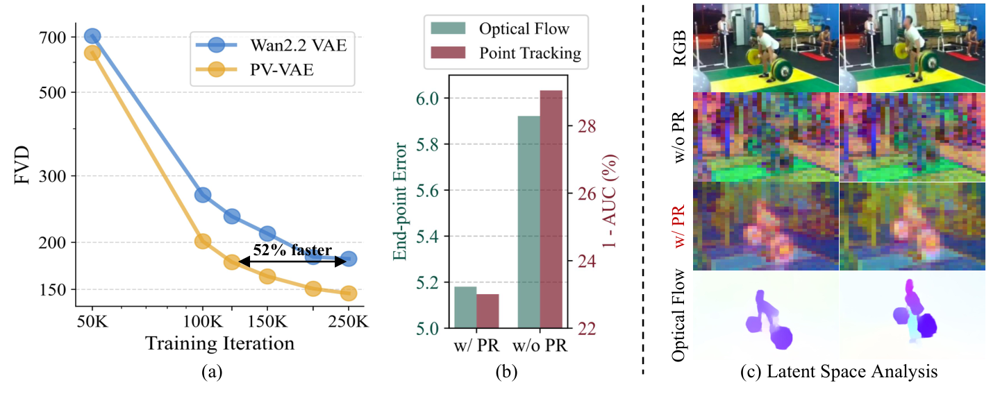
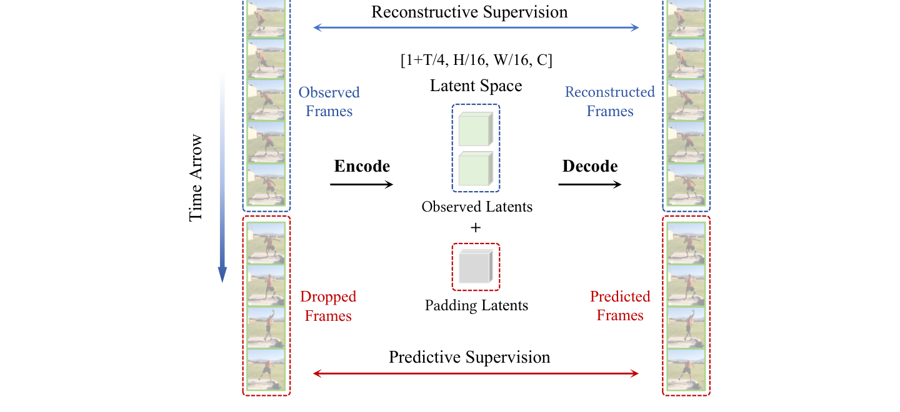
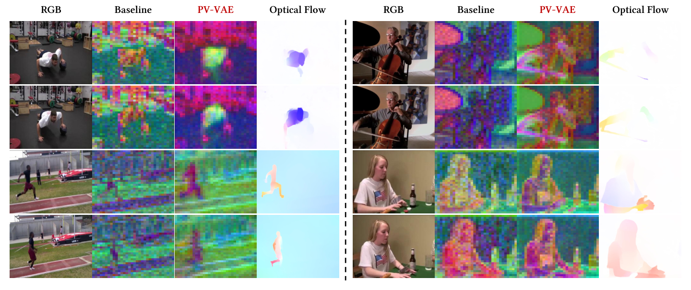
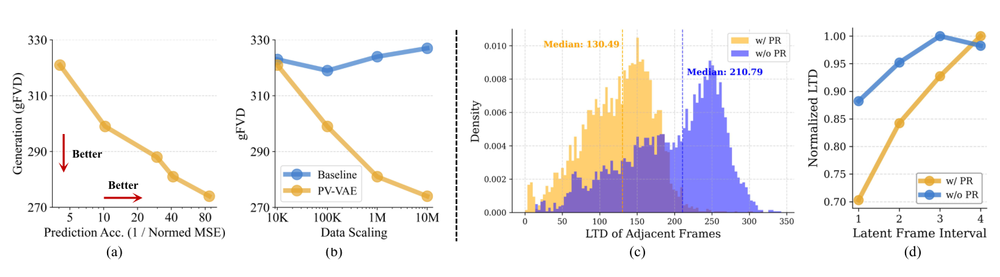
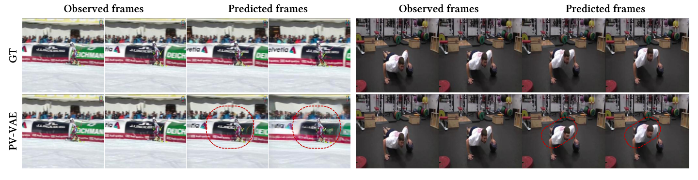
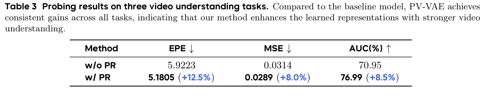

Training objective
MSE, temporal-difference reconstruction, LPIPS, GAN loss, and KL regularization are used without introducing a complex auxiliary pipeline.
Predictive Video VAE (PV-VAE) improves latent video generation by training the tokenizer to reconstruct observed frames and predict withheld future frames.

PV-VAE studies how to make video VAE latents more suitable for diffusion, not merely more faithful for pixel reconstruction.
Modern video generation models rely on video VAEs to compress visual data into compact spatiotemporal latents. However, better reconstruction metrics do not necessarily translate into better latent diffusion training.
PV-VAE introduces a predictive reconstruction objective: randomly discard future frames, encode only the observed past, pad the latent sequence, and decode the complete video. The decoder therefore learns to reconstruct what was seen and infer what happens next.
This simple objective encourages latents to encode temporal dynamics, motion priors, and smoother video trajectories, leading to stronger generation and better downstream video understanding features.
The training pipeline remains close to standard video VAE training, but the encoder is restricted to observed frames while the decoder reconstructs the full sequence.

MSE, temporal-difference reconstruction, LPIPS, GAN loss, and KL regularization are used without introducing a complex auxiliary pipeline.
The reported model uses 3D causal convolutions, 16x spatial compression, 4x temporal compression, and 64 latent channels.
After predictive training, the encoder is frozen and the decoder is fine-tuned for standard reconstruction to reduce the training-inference gap.
Click the tabs to switch between generation and reconstruction settings, and click each method row for a short interpretation.
Generation performance. 17-frame 256 x 256 videos. Lower FVD/KVD is better; higher IS is better. Best in green, second-best in blue underline.
| Method | Latent config | UCF101 FVD ↓ | UCF101 KVD ↓ | UCF101 IS ↑ | RE10K FVD ↓ | RE10K KVD ↓ | Train speed ↑ | Train mem ↓ | Params |
|---|---|---|---|---|---|---|---|---|---|
| CogX-VAE | t4s8c16 | 176.90 | 16.47 | 64.19 | 94.12 | 10.41 | 0.76 | 85.93 | 216M |
A strong public video VAE baseline, but the low-compression latent is expensive for training the downstream generator. | |||||||||
| IV-VAE | t4s8c16 | 175.74 | 22.32 | 64.51 | 92.37 | 8.35 | 1.28 | 88.34 | 242M |
Improves some unconditional generation metrics, but still trails PV-VAE on the main FVD comparisons. | |||||||||
| WF-VAE-L | t4s8c16 | 188.19 | 33.01 | 67.49 | 107.26 | 12.56 | 2.52 | 87.36 | 317M |
Wavelet-driven design is efficient, yet its generation quality is weaker in the reported Latte setup. | |||||||||
| Hunyuan-VAE | t4s8c16 | 210.30 | 52.81 | 66.40 | 83.45 | 13.23 | 1.64 | 87.36 | 246M |
Reconstruction-oriented quality does not directly translate into stronger generation in this comparison. | |||||||||
| Wan2.1 VAE | t4s8c16 | 167.10 | 11.54 | 66.04 | 83.84 | 10.64 | 1.88 | 86.44 | 127M |
A compact and competitive baseline; PV-VAE still improves the main FVD and IS metrics. | |||||||||
| Wan2.2 VAE | t4s16c48 | 180.79 | 17.80 | 67.32 | 87.15 | 10.11 | 4.96 | 30.90 | 705M |
PV-VAE improves UCF101 FVD by 34.42 while keeping comparable high-compression efficiency. | |||||||||
| SSVAE | t4s16c48 | 168.68 | 19.71 | 66.39 | 79.08 | 8.79 | 3.92 | 34.00 | 315M |
Spectral constraints help diffusability, while predictive reconstruction gives a stronger overall generation result. | |||||||||
| PV-VAE | t4s16c64 | 146.37 | 14.52 | 69.72 | 72.50 | 4.06 | 4.40 | 33.34 | 661M |
PV-VAE achieves the best overall generation quality, supporting the paper's claim that predictive latent structure improves downstream diffusion training. | |||||||||
Reconstruction performance. Kinetics-400 validation videos at 17 x 256 x 256 and 17 x 512 x 512. PV-VAE remains competitive while prioritizing generation-ready latents.
| Method | Config family | 256 rFVD ↓ | 256 PSNR ↑ | 256 SSIM ↑ | 256 LPIPS ↓ | 512 rFVD ↓ | 512 PSNR ↑ | 512 SSIM ↑ | 512 LPIPS ↓ | Infer speed ↑ | Infer mem ↓ |
|---|---|---|---|---|---|---|---|---|---|---|---|
| CogX-VAE | t4s8c16 | 4.90 | 33.78 | 0.97 | 0.027 | 1.79 | 36.00 | 0.99 | 0.024 | 0.46 | 13.64 |
Strong high-resolution SSIM, but with higher inference memory than PV-VAE. | |||||||||||
| IV-VAE | t4s8c16 | 2.78 | 34.08 | 0.96 | 0.019 | 0.97 | 37.24 | 0.96 | 0.016 | 0.32 | 5.39 |
Excellent reconstruction metrics under lower compression, but not the strongest generation result. | |||||||||||
| WF-VAE-L | t4s8c16 | 3.06 | 33.48 | 0.96 | 0.023 | 1.08 | 35.93 | 0.96 | 0.023 | 0.87 | 5.00 |
Fast and memory-efficient, with weaker generation quality in Table 1. | |||||||||||
| Hunyuan-VAE | t4s8c16 | 2.96 | 34.30 | 0.97 | 0.016 | 0.90 | 37.13 | 0.97 | 0.015 | 0.50 | 22.00 |
Very strong reconstruction, but the paper shows that reconstruction strength alone does not ensure generation strength. | |||||||||||
| Wan2.1 VAE | t4s8c16 | 2.92 | 33.21 | 0.95 | 0.018 | 1.02 | 36.15 | 0.97 | 0.017 | 0.60 | 6.77 |
A compact baseline with solid reconstruction and generation, but less temporal predictive structure. | |||||||||||
| Wan2.2 VAE | t4s16c48 | 3.42 | 33.78 | 0.96 | 0.015 | 1.22 | 36.75 | 0.97 | 0.015 | 0.58 | 9.36 |
PV-VAE is slightly behind on some reconstruction metrics but substantially ahead on generation FVD. | |||||||||||
| SSVAE | t4s16c48 | 7.50 | 31.18 | 0.96 | 0.036 | 2.16 | 34.45 | 0.97 | 0.028 | 0.64 | 7.63 |
Spectral regularization improves diffusability but sacrifices reconstruction more noticeably. | |||||||||||
| PV-VAE | t4s16c64 | 3.45 | 32.26 | 0.95 | 0.020 | 1.88 | 35.03 | 0.97 | 0.020 | 0.69 | 7.97 |
PV-VAE keeps reconstruction competitive after decoder fine-tuning, while the generation table shows the main advantage of predictive latents. | |||||||||||
The page now keeps the visual evidence from the paper: PCA/optical-flow alignment, correlation and scaling curves, temporal coherence, prediction validation, and downstream probing.




PCA visualizations show that PV-VAE allocates more representational capacity to dynamic foregrounds.
Latent temporal distance becomes smoother for adjacent frames and more monotonic across longer intervals.
LVDM features trained on PV-VAE latents improve across optical flow, next-frame prediction, and tracking probes.
Due to confidentiality constraints, we cannot release the production code. The core insight and implementation route, however, are lightweight enough to be reproduced and extended in existing video VAE pipelines.
@article{zhao2026pvvae,
title = {Video Generation with Predictive Latents},
author = {Zhao, Yian and Wang, Feng and Guo, Qiushan and Liu, Chang and Ji, Xiangyang and Zhang, Jian and Chen, Jie},
year = {2026},
note = {Technical report}
}